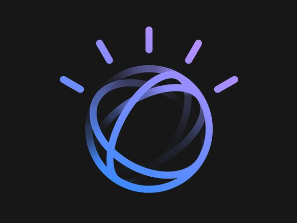

Influência da IBM Watson na saúde

Melhoria do atendimento
Os recursos tecnológicos disponíveis podem melhorar o atendimento aos pacientes das clínicas desde o momento da recepção até o pós-consulta. Com um sistema informatizado e capacitação de pessoal esse ciclo será eficiente em toda a sua dimensão, pois os dados coletados na recepção serão armazenados e acessados pelos profissionais antes da realização de qualquer procedimento e, consequentemente, não serão solicitados novamente. Mediante esse fato, os profissionais clínicos terão como rastrear as atividades realizadas junto ao paciente e, caso ele apresente alguma reação indesejável, isso será sanado mais rapidamente se comparado ao prontuário manuscrito. Além disso, com o software adequado será possível utilizar o atendimento online para facilitar as marcações e o paciente terá a liberdade de agendar a consulta em qualquer horário do dia ou da noite, todos os dias da semana. Os benefícios gerenciais também serão evidenciados, pois a equipe administrativa terá mais tempo e, com isso, aumentará a sua produtividade, sem afetar a qualidade do atendimento presencial.
O que é IBM Watson?
O IBM Watson é, na verdade, um conjunto de APIs (interface de programação de aplicações. Cada API que constitui a ferramenta é responsável por uma “especialidade” do serviço e você pode utilizá-la para criar seus próprios sistemas cognitivos. Para ficar ainda mais fácil, as APIs Watson estão disponíveis no Bluemix, a plataforma cloud da IBM, que também concentra vários outros serviços, inclusive de código aberto (open source). A diversidade de serviços oferecidos no Bluemix torna mais simples a construção de aplicações para o usuário, sem que seja necessário a instalação ou configuração desses serviços. É possível visualizar alguns exemplos de uso da ferramenta na página da IBM Watson. Entre os mais populares, está o machine learning. O que é Machine.
Como faço para utilizar os serviços IBM Watson?
Para utilizar os serviços do IBM Watson é necessário criar uma conta na IBM Cloud. Você pode fazer isso acessando este link. Depois disso, você terá acesso ao console Bluemix. Nele, é possível visualizar todos os serviços ou aplicações que foram instanciados. Para isso, abra a sessão Dashboard, localizada no menu superior esquerdo. Uma tela semelhante a da imagem deverá ser exibida. Caso você tenha instanciado um serviço, e mesmo assim não consiga visualizá-lo no Dashboard, keep calm and don’t panic! Certifique-se de que seu Dashboard está configurado para a Região, o Cloud Foundry Org e o Cloud Foundry Space corretos. Essas opções são definidas quando um novo serviço é instanciado. Para instanciar um novo serviço do Watson, acesse a aba Catalog e, em seguida, Watson. É possível visualizar todos os serviços e escolher qual você deseja instanciar.